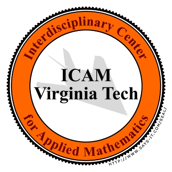

Participants
3rd Annual JohnFest / SIAM Student Conference (2011)
Clemson University
The Student Senate Chambers
5th level of Edgar A. Brown University Union
Saturday, 19 February 2011
The speakers are listed in boldface. By clicking on the highlighted
names, you can see the corresponding entry in the Mathematics Genealogy Project.
-
Leo Rebholz, Clemson, Mathematical Sciences
-
Nick Wilson, Clemson, Mathematical Sciences
-
Keith Galvin, Clemson, Mathematical Sciences
-
Abigail Bowers, Clemson, Mathematical Sciences
-
Jeff Borggaard, VT, Mathematics (ICAM)
-
Lizette Zietsman, VT, Mathematics (ICAM)
-
Traian Iliescu, VT, Mathematics (ICAM)
-
Vitor Leite Nunes, VT, Mathematics (ICAM)
-
Hans Werner van Wyk, VT, Mathematics (ICAM)
-
Zhu Wang, VT, Mathematics (ICAM)
-
Erich Foster, VT, Mathematics (ICAM)
-
John Burkardt, Florida State, Department of Scientific Computing
-
Yanzhao Cao, Auburn, Mathematics
-
Lea Jenkins, Clemson, Mathematical Sciences
-
Vince Ervin, Clemson, Mathematical Sciences
-
Hyesuk Lee, Clemson, Mathematical Sciences
-
Christopher Gillam, Clemson, Mathematical Sciences
-
Catherine Burch White, Clemson, Mathematical Sciences
-
Zhen Wang, Emory, Mathematics and Computer Science
-
Amnon Meir, Auburn, Mathematics
-
Michele Benzi, Emory, Mathematics and Computer Science
-
James Nagy, Emory, Mathematics and Computer Science
-
Alessandro Veneziani, Emory, Mathematics and Computer Science
-
Marta D'Elia, Emory, Mathematics and Computer Science
-
Umberto Villa, Emory, Mathematics and Computer Science
-
Alexis Aposporidis, Emory, Mathematics and Computer Science
-
Verena Kuhlemann, Emory, Mathematics and Computer Science
-
Bill Layton, Pitt, Mathematics
-
Catalin Trenchea, Pitt, Mathematics
-
Lili Ju, University of South Carolina, Mathematics
-
Xiao Xiao, University of South Carolina, Mathematics
-
Vy Tran, Clemson, Mathematical Sciences
-
Xi Chen, Florida State, Scientific Computing
-
Michal Palczewski, Florida State, Scientific Computing
-
Guannan Zhang, Florida State, Scienfific Computing
-
Jeff Steward, Florida State, Scienfific Computing
-
Ian Johnson, Florida State, Scienfific Computing
-
Feng Bao Auburn, Mathematics